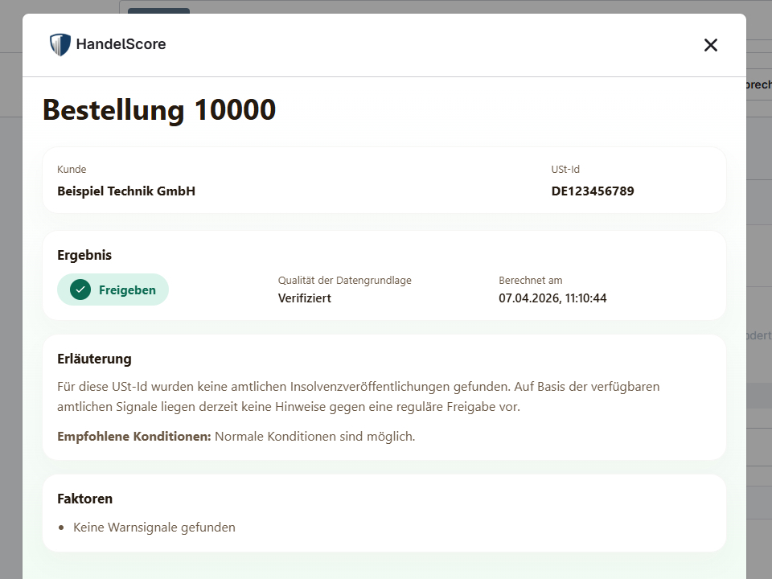
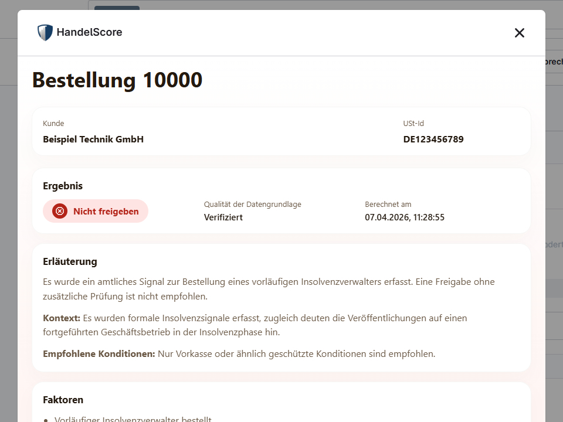
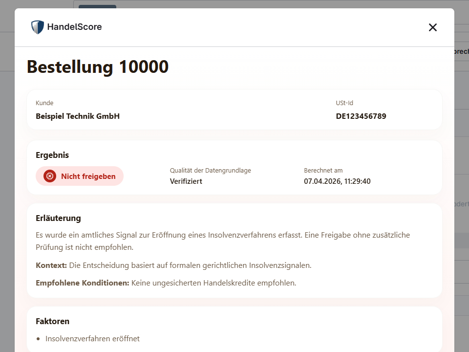

Prüfen Sie Geschäftspartner per USt-IdNr.
Prüfen Sie Unternehmen in Deutschland schnell per USt-IdNr. und erhalten Sie ein klares, nachvollziehbares Risikosignal auf Basis öffentlich zugänglicher Hinweise, etwa zu Insolvenzanträgen, eröffneten Verfahren und relevanten Registereinträgen.
HandelScore ist als Extension für Shopware 6 verfügbar, in 5 Minuten einsatzbereit und lässt sich direkt in Bestell-, Freigabe- und B2B-Prüfprozesse integrieren.
Warum HandelScore im Tagesgeschäft wirkt
Risiko früh erkennen
Werden in öffentlichen Quellen kritische Hinweise wie Insolvenzanträge oder Verfahrenseröffnungen sichtbar, fließen sie früh in Ihre Anbahnungs-, Prüf- oder Aufnahmephase ein.
Prüfprozesse beschleunigen
Standardisierte Ergebnisse reduzieren Rückfragen, unterstützen effizientere Freigaben und schaffen klare Eskalationspfade statt Einzelfallchaos.
Transparenz im Team
Vertrieb, Einkauf und Finance arbeiten mit denselben Kriterien, Schwellwerten und Ergebnisformaten. Das schafft Konsistenz über alle Prozesse hinweg.
Preise
Standard-Abonnement
Für Teams, die HandelScore mit einem klar kalkulierbaren monatlichen Volumen einsetzen möchten.
Gemäß § 19 UStG wird keine Umsatzsteuer ausgewiesen.
Individuelle Konditionen
Für Unternehmen mit höherem Anfragevolumen oder besonderen Integrationsanforderungen erstellen wir ein passendes Angebot.
Kontakt aufnehmen{kind=link}

{kind=link}

{kind=link}

Typische Einsatzszenarien
Die Lösung unterstützt typische B2B-Prozesse mit klaren, wiederverwendbaren Risikosignalen und nachvollziehbaren Hinweisen für die interne Prüfung.
Prüfung im Bestellprozess
Prüfen Sie Geschäftspartner vor größeren Aufträgen und reduzieren Sie Risiken im laufenden B2B-Bestellgeschäft.
- Standardisierte Prüfung bei Neukunden
- Einordnung bei ungewöhnlich großen Bestellungen
- Standardisiertes Risikosignal für interne Regeln
Aufnahme neuer Lieferanten und Partner
Integrieren Sie das Ergebnis in Ihren Aufnahmeprozess und schaffen Sie einen einheitlichen Standard für die interne Einordnung.
- USt-IdNr. wird erfasst
- HandelScore wird abgefragt
- Ergebnis wird im Aufnahmeprozess gespeichert
B2B-Marktplätze
Unterstützen Sie Plattformteams mit einheitlichen Risikosignalen für Händler, Lieferanten und Partner.
- Händlerprofile standardisiert zu prüfen
- Risikosignale in Moderationssysteme einzubinden
- Plattformrichtlinien konsistent anzuwenden
Standardisierte Prüfpfade
Nutzen Sie klare Risikohinweise für feste Prüfpfade, weniger Ausnahmen und nachvollziehbare Freigaben im Rahmen Ihrer internen Prüfung.
- Nicht freigeben bei eröffneten Verfahren, vorläufigem Insolvenzverwalter oder ähnlich kritischen amtlichen Signalen
- Nur mit Absicherung bei unklarer Datenlage, mehrdeutiger Zuordnung oder vorsichtiger Einordnung
- Freigeben wenn im Rahmen der Prüfung keine amtlichen Insolvenzsignale gefunden wurden
Welche Signale fließen ein?
Insolvenzbekanntmachungen
Offizielle Veröffentlichungen zu Insolvenzanträgen, Verfahrenseröffnungen und weiteren Verfahrensschritten liefern frühe Signale für kritische Entwicklungen.
Gerichtliche Veröffentlichungen
Öffentlich zugängliche gerichtliche Hinweise werden strukturiert ausgewertet und für die operative Risikobewertung nutzbar gemacht.
Handelsregistersignale
Ergänzende Signale aus offiziellen Registern helfen bei der Einordnung von Unternehmen und ihrer aktuellen Situation.
So funktioniert HandelScore
USt-IdNr. im Prozess übergeben
Die USt-IdNr. wird an den relevanten Stellen im Prozess, etwa vor einer Freigabe, Bestellung oder Partneraufnahme, an HandelScore übergeben.
Öffentliche Signale werden ausgewertet
HandelScore wertet verfügbare Signale aus öffentlichen Quellen regelbasiert aus.
Standardisiertes Ergebnis erhalten
Sie erhalten Decision-Hinweis, Score, Farbstufe, Datenabdeckung und strukturierte Hinweise.
Im Prozess nutzen
Das Ergebnis wird in Ihren Freigabe-, Prüf-, Aufnahme- oder Bestellprozess übernommen.
Beispiel eines Entscheidungsergebnisses
Beispiel einer Antwort
{
"score": 70,
"decision": "DO_NOT_PROCEED",
"dataCoverage": "VERIFIED",
"riskColor": "RED",
"confidence": 0.67,
"appliedHardRules": [
"RULE_PROCEEDINGS_OPENED_MIN_E"
],
"calculatedAt": "2026-03-06T10:15:30Z",
"formulaVersion": "v2.1-smb-decision-aligned-score",
"explanation": {
"summary": "PROCEEDINGS_OPENED",
"factors": [
{
"type": "PROCEEDINGS_OPENED",
"impact": "HIGH"
},
{
"type": "RECENT_INSOLVENCY_EVENT",
"impact": "MEDIUM"
}
]
}
}
Erklärung der Felder
Decision: maschinell verarbeitbarer Hinweiscode: PROCEED, PROCEED_WITH_PROTECTION oder DO_NOT_PROCEED.
Score (0-100): numerischer Integrationswert zur technischen und fachlichen Einordnung.
Data Coverage: Qualität der Datengrundlage (z. B. VERIFIED bei klarer Einordnung, INSUFFICIENT bei vorsichtiger oder mehrdeutiger Lage).
Risk Color: visuelle Einordnung für Oberflächen (Grün, Gelb, Rot).
Confidence (0.0-1.0): relative Stabilität der Einordnung auf Basis verfügbarer Signale.
Explanation: strukturierte Begründung mit Summary-Code und Faktoren.
Das HandelScore Entscheidungsmodell
Decision-Hinweis, Score und Empfehlung lassen sich in operative Freigabe- und Prüfprozesse einordnen. Die abschließende Bewertung und Entscheidung erfolgt stets durch einen Menschen.
| Score (0-100) | Decision | Bedeutung | Empfehlung |
|---|---|---|---|
| 0 - 14 | PROCEED | Im Rahmen der Prüfung wurden keine amtlichen Insolvenzsignale gefunden. Das gilt sowohl für klar unauffällige Treffer als auch für Fälle, in denen für die USt-IdNr. keine amtlichen Insolvenzveröffentlichungen gefunden wurden. | Freigeben nach interner Richtlinie und menschlicher Prüfung |
| 15 - 69 | PROCEED_WITH_PROTECTION | Vorsichtige Einordnung, z. B. bei aktueller, aber nicht eindeutig kritischer Signallage, bei begrenzter Datengrundlage oder wenn mehrere Firmen zu einer USt-IdNr. passen und die Zuordnung manuell bestätigt werden sollte. | Nur mit Absicherung, Vorkasse oder kurzer manueller Prüfung |
| 70+ | DO_NOT_PROCEED | Kritische amtliche Insolvenzsignale oder harte Stop-Regeln, z. B. eröffnetes Insolvenzverfahren, Einstellung mangels Masse oder Bestellung eines vorläufigen Insolvenzverwalters zur Sicherung des Vermögens. | Nicht freigeben, sofern die interne Prüfung dies bestätigt |
Warum deterministische Entscheidungen statt intransparenter Modelle?
Nachvollziehbarkeit
Die wichtigsten Einflussfaktoren werden strukturiert ausgegeben und bleiben intern belegbar.
Reproduzierbarkeit
Bei gleichen Eingangsdaten bleibt das Ergebnis konsistent und verlässlich einordenbar.
Stabilität in Integrationen
Vorhersehbare Ergebnisse erleichtern den stabilen Betrieb in ERP-, CRM- und Plattformprozessen.
Häufige Fragen
Ist HandelScore eine Bonitätsauskunft?
Nein. HandelScore ist ein ergänzendes B2B-Risikosignal auf Basis veröffentlichter Unternehmenssignale und ersetzt keine klassische Bonitätsauskunft oder Einzelfallprüfung.
Wie schnell ist die Prüfung?
Eine Bewertung erfolgt typischerweise in wenigen hundert Millisekunden und eignet sich damit auch für eingebettete Prüfungen im Bestell- oder Onboarding-Workflow.
Für wen ist HandelScore gedacht?
Die Lösung richtet sich an B2B-Prozesse zur Bewertung von Unternehmen und sonstigen juristischen Personen in Deutschland.
Wie wird HandelScore eingebunden?
Die Nutzung ist über bestehende Prozesse möglich, zum Beispiel in Shopware 6 sowie in individuellen Freigabe-, Bestell- oder Aufnahmeabläufen.
Hinweis zur Einordnung
HandelScore richtet sich ausschließlich an Unternehmen und sonstige juristische Personen im B2B-Kontext. Die Lösung ist nicht für Verbraucher, natürliche Personen oder personenbezogene Bonitätsentscheidungen bestimmt.
Das Ergebnis ist eine unterstützende Einordnungshilfe und keine alleinige Entscheidungsgrundlage. Es ersetzt keine rechtliche, kaufmännische, Bonitäts- oder Compliance-Prüfung im Einzelfall.
Vollständigkeit und Aktualität hängen von der Verfügbarkeit der verwendeten öffentlichen Quellen ab. Die abschließende Bewertung und Entscheidung erfolgt stets durch einen Menschen.
Soweit unterstützende KI- oder LLM-Komponenten eingesetzt werden, dienen diese nur der Strukturierung oder Zusammenfassung von Informationen. Sie treffen keine autonomen Entscheidungen und ersetzen keine menschliche Prüfung.
Nächster Schritt
Sprechen Sie mit uns über Ihren Anwendungsfall, die Integration und den passenden Einstieg.